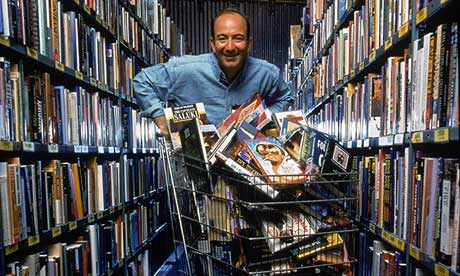

Jonathan Franzen: what’s wrong with the modern world
While we are busy tweeting, texting and spending, the world is drifting towards disaster, believes Jonathan Franzen, whose despair at our insatiable technoconsumerism echoes the apocalyptic essays of the satirist Karl Kraus – ‘the Great Hater’
Jonathan Franzen confesses to ‘feeling some version of [Karl Kraus’s] disappointment when a novelist who I believe ought to have known better succumbs to Twitter’. Illustration: Mark Lazenby
Karl Kraus was an Austrian satirist and a central figure in fin-de-siecle Vienna’s famously rich life of the mind. From 1899 until his death in 1936, he edited and published the influential magazine Die Fackel (The Torch); from 1911 onward, he was also the magazine’s sole author. Although Kraus would probably have hated blogs, Die Fackel was like a blog that everybody who mattered in the German-speaking world, from Freud to Kafka to Walter Benjamin, found it necessary to read and have an attitude toward. Kraus was especially well known for his aphorisms – for example, “Psychoanalysis is that disease of the mind for which it believes itself to be the cure” – and at the height of his popularity he drew thousands to his public readings.
The thing about Kraus is that he’s is very hard to follow on a first reading – deliberately hard. He was the scourge of throwaway journalism, and to his cult-like followers his dense and intricately coded style formed an agreeable barrier to entry; it kept the uninitiated out. Kraus himself remarked of the playwright Hermann Bahr, before attacking him: “If he understands one sentence of the essay, I’ll retract the entire thing.” If you read Kraus’s sentences more than once, you’ll find that they have a lot to say to us in our own media-saturated, technology-crazed, apocalypse-haunted historical moment.
Here, for example, is the first paragraph of his essay “Heine and the Consequences”.
“Two strains of intellectual vulgarity: defenselessness against content and defenselessness against form. The one experiences only the material side of art. It is of German origin. The other experiences even the rawest of materials artistically. It is of Romance origin. [Romance meaning Romance-language — French or Italian.] To the one, art is an instrument; to the other, life is an ornament. In which hell would the artist prefer to fry? He’d surely still rather live among the Germans. For although they’ve strapped art into the Procrustean Folding Bed of their commerce, they’ve also made life sober, and this is a blessing: fantasy thrives, and every man can put his own light in the barren windowframes. Just spare me the pretty ribbons! Spare me this good taste that over there and down there delights the eye and irritates the imagination. Spare me this melody of life that disturbs my own music, which comes into its own only in the roaring of the German workday. Spare me this universal higher level of refinement from which it’s so easy to observe that the newspaper seller in Paris has more charm than the Prussian publisher.”
First footnote: Kraus’s suspicion of the “melody of life” in France and Italy still has merit. His contention here – that walking down a street in Paris or Rome is an aesthetic experience in itself – is confirmed by the ongoing popularity of France and Italy as vacation destinations and by the “envy me” tone of American Francophiles and Italophiles announcing their travel plans. If you say you’re taking a trip to Germany, you’d better be able to explain what specifically you’re planning to do there, or else people will wonder why you’re not going someplace where life is beautiful. Even now, Germany insists on content over form. If the concept of coolness had existed in Kraus’s time, he might have said that Germany is uncool.
This suggests a more contemporary version of Kraus’s dichotomy: Mac versus PC. Isn’t the essence of the Apple product that you achieve coolness simply by virtue of owning it? It doesn’t even matter what you’re creating on your Mac Air. Simply using a Mac Air, experiencing the elegant design of its hardware and software, is a pleasure in itself, like walking down a street in Paris. Whereas, when you’re working on some clunky, utilitarian PC, the only thing to enjoy is the quality of your work itself. As Kraus says of Germanic life, the PC “sobers” what you’re doing; it allows you to see it unadorned. This was especially true in the years of DOS operating systems and early Windows.
Jonathan Franzen: ‘Anger descended on me so near in time to when I fell in love with Kraus’s writing that the two occurrences are practically indistinguishable.’
One of the developments that Kraus will decry in this essay – the Viennese dolling-up of German language and culture with decorative elements imported from Romance language and culture – has a correlative in more recent editions of Windows, which borrow ever more features from Apple but still can’t conceal their essential uncool Windowsness. Worse yet, in chasing after Apple elegance, they betray the old austere beauty of PC functionality. They still don’t work as well as Macs do, and they’re ugly by both cool and utilitarian standards.
And yet, to echo Kraus, I’d still rather live among PCs. Any chance that I might have switched to Apple was negated by the famous and long-running series of Apple ads aimed at persuading people like me to switch. The argument was eminently reasonable, but it was delivered by a personified Mac (played by the actor Justin Long) of such insufferable smugness that he made the miseries of Windows attractive by comparison. You wouldn’t want to read a novel about the Mac: what would there be to say except that everything is groovy? Characters in novels need to have actual desires; and the character in the Apple ads who had desires was the PC, played by John Hodgman. His attempts to defend himself and to pass himself off as cool were funny, and he suffered, like a human being. (There were local versions of the ad around the world, with comedians David Mitchell and Robert Webb as the PC and Mac in the UK).
I’d be remiss if I didn’t add that the concept of “cool” has been so fully co-opted by the tech industries that some adjacent word such as “hip” is needed to describe those online voices who proceeded to hate on Long and deem Hodgman to be the cool one. The restlessness of who or what is considered hip nowadays may be an artifact of what Marx famously identified as the “restless” nature of capitalism. One of the worst things about the internet is that it tempts everyone to be a sophisticate – to take positions on what is hip and to consider, under pain of being considered unhip, the positions that everyone else is taking. Kraus may not have cared about hipness per se, but he certainly revelled in taking positions and was keenly attuned to the positions of others. He was a sophisticate, and this is one reason Die Fackel has a bloglike feel. Kraus spent a lot of time reading stuff he hated, so as to be able to hate it with authority.
“Believe me, you color-happy people, in cultures where every blockhead has individuality, individuality becomes a thing for blockheads.”
Second footnote: You’re not allowed to say things like this in America nowadays, no matter how much the billion (or is it 2 billion now?) “individualised” Facebook pages may make you want to say them. Kraus was known, in his day, to his many enemies, as the Great Hater. By most accounts, he was a tender and generous man in his private life, with many loyal friends. But once he starts winding the stem of his polemical rhetoric, it carries him into extremely harsh registers.
The individualised “blockheads” that Kraus has in mind here aren’t hoi polloi. Although Kraus could sound like an elitist, he wasn’t in the business of denigrating the masses or lowbrow culture; the calculated difficulty of his writing wasn’t a barricade against the barbarians. It was aimed, instead, at bright and well-educated cultural authorities who embraced a phony kind of individuality – people Kraus believed ought to have known better.
It’s not clear that Kraus’s shrill, ex cathedra denunciations were the most effective way to change hearts and minds. But I confess to feeling some version of his disappointment when a novelist who I believe ought to have known better, Salman Rushdie, succumbs to Twitter. Or when a politically committed print magazine that I respect, N+1, denigrates print magazines as terminally “male,” celebrates the internet as “female,” and somehow neglects to consider the internet’s accelerating pauperisation of freelance writers. Or when good lefty professors who once resisted alienation – who criticised capitalism for its restless assault on every tradition and every community that gets in its way – start calling the corporatised internet “revolutionary.”
“Spare me the picturesque moil on the rind of an old gorgonzola in place of the dependable white monotony of cream cheese! Life is hard to digest both here and there. But the Romance diet beautifies the spoilage; you swallow the bait and go belly up. The German regimen spoils beauty and puts us to the test: how do we recreate it? Romance culture makes everyman a poet. Art’s a piece of cake there. And Heaven a hell.”
Submerged in this paragraph is the implication that Kraus’s Vienna was an in-between case – like Windows Vista. Its language and orientation were German, but it was the co-capital of a Roman Catholic empire reaching far into southern Europe, and it was in love with its own notion of its special, charming Viennese spirit and lifestyle. (“The streets of Vienna are paved with culture,” goes one of Kraus’s aphorisms. “The streets of other cities with asphalt.“) To Kraus, the supposed cultural charm of Vienna amounted to a tissue of hypocrisies stretched over soon-to-be-catastrophic contradictions, which he was bent on unmasking with his satire. The paragraph may come down harder on Latin culture than on German, but Kraus was actually fond of vacationing in Italy and had some of his most romantic experiences there. For him, the place with the really dangerous disconnect between content and form was Austria, which was rapidly modernising while retaining early-19th-century political and social models. Kraus was obsessed with the role of modern newspapers in papering over the contradictions. Like the Hearst papers in America, the bourgeois Viennese press had immense political and financial influence, and was demonstrably corrupt. It profited greatly from the first world war and was instrumental in sustaining charming Viennese myths like the “hero’s death” through years of mechanised slaughter. The Great War was precisely the Austrian apocalypse that Kraus had been prophesying, and he relentlessly satirised the press’s complicity in it.
Vienna in 1910 was, thus, a special case. And yet you could argue that America in 2013 is a similarly special case: another weakened empire telling itself stories of its exceptionalism while it drifts towards apocalypse of some sort, fiscal or epidemiological, climatic-environmental or thermonuclear. Our far left may hate religion and think we coddle Israel, our far right may hate illegal immigrants and think we coddle black people, and nobody may know how the economy is supposed to work now that markets have gone global, but the actual substance of our daily lives is total distraction. We can’t face the real problems; we spent a trillion dollars not really solving a problem in Iraq that wasn’t really a problem; we can’t even agree on how to keep healthcare costs from devouring the GNP. What we can all agree to do instead is to deliver ourselves to the cool new media and technologies, to Steve Jobs and Mark Zuckerberg and Jeff Bezos, and to let them profit at our expense. Our situation looks quite a bit like Vienna’s in 1910, except that newspaper technology has been replaced by digital technology and Viennese charm by American coolness.
Karl Kraus. Photograph: Imagno/Getty Images
Consider the first paragraph of a second Kraus essay, “Nestroy and Posterity”. The essay is ostensibly a celebration of Johann Nestroy, a leading figure in the Golden Age of Viennese theatre, in the first half of the 19th century. By the time Kraus published it, in 1912, Nestroy was underrated, misread and substantially forgotten, and Kraus takes this to be a symptom of what’s wrong with modernity. In his essay “Apocalypse”, a few years earlier, he’d written: “Culture can’t catch its breath, and in the end a dead humanity lies next to its works, whose invention cost us so much of our intellect that we had none left to put them to use. We were complicated enough to build machines and too primitive to make them serve us.” To me the most impressive thing about Kraus as a thinker may be how early and clearly he recognised the divergence of technological progress from moral and spiritual progress. A succeeding century of the former, involving scientific advances that would have seemed miraculous not long ago, has resulted in high-resolution smartphone videos of dudes dropping Mentos into litre bottles of Diet Pepsi and shouting “Whoa!” Technovisionaries of the 1990s promised that the internet would usher in a new world of peace, love, and understanding, and Twitter executives are still banging the utopianist drum, claiming foundational credit for the Arab spring. To listen to them, you’d think it was inconceivable that eastern Europe could liberate itself from the Soviets without the benefit of cellphones, or that a bunch of Americans revolted against the British and produced the US constitution without 4G capability.
“Nestroy and Posterity” begins:
“We cannot celebrate his memory the way a posterity ought to, by acknowledging a debt we’re called upon to honor, and so we want to celebrate his memory by confessing to a bankruptcy that dishonors us, we inhabitants of a time that has lost the capacity to be a posterity… How could the eternal Builder fail to learn from the experiences of this century? For as long as there have been geniuses, they’ve been placed into a time like temporary tenants, while the plaster was still drying; they moved out and left things cozier for humanity. For as long as there have been engineers, however, the house has been getting less habitable. God have mercy on the development! Better that He not allow artists to be born than with the consolation that this future of ours will be better for their having lived before us. This world! Let it just try to feel like a posterity, and, at the insinuation that it owes its progress to a detour of the Mind, it will give out a laugh that seems to say: More Dentists Prefer Pepsodent. A laugh based on an idea of Roosevelt’s and orchestrated by Bernard Shaw. It’s the laugh that’s done with everything and can do whatever. For the technicians have burned the bridges, and the future is: whatever follows automatically.”
Nowadays, the refrain is that “there’s no stopping our powerful new technologies”. Grassroots resistance to these technologies is almost entirely confined to health and safety issues, and meanwhile various logics – of war theory, of technology, of the marketplace – keep unfolding automatically. We find ourselves living in a world with hydrogen bombs because uranium bombs just weren’t going to get the job done; we find ourselves spending most of our waking hours texting and emailing and Tweeting and posting on colour-screen gadgets because Moore’s law said we could. We’re told that, to remain competitive economically, we need to forget about the humanities and teach our children “passion” for digital technology and prepare them to spend their entire lives incessantly re-educating themselves to keep up with it. The logic says that if we want things like Zappos.com or home DVR capability – and who wouldn’t want them? – we need to say goodbye to job stability and hello to a lifetime of anxiety. We need to become as restless as capitalism itself.
Not only am I not a Luddite, I’m not even sure the original Luddites were Luddites. (It simply seemed practical to them to smash the steam-powered looms that were putting them out of work.) I spend all day every day using software and silicon, and I’m enchanted with everything about my new Lenovo ultrabook computer except its name. (Working on something called an IdeaPad tempts me to refuse to have ideas.) But not long ago, when I was intemperate enough to call Twitter “dumb” in public, the response of Twitter addicts was to call me a Luddite. Nyah, nyah, nyah! It was as if I’d said it was “dumb” to smoke cigarettes, except that in this case I had no medical evidence to back me up. People did worry, for a while, that cellphones might cause brain cancer, but the link has been revealed to be feeble-to-nonexistent, and now nobody has to worry any more.
“This velocity doesn’t realize that its achievement is important only in escaping itself. Present in body, repellent in spirit, perfect just the way they are, these times of ours are hoping to be overtaken by the times ahead, and that the children, spawned by the union of sport and machine and nourished by newspaper, will be able to laugh even better then … There’s no scaring them; if a spirit comes along, the word is: we’ve already got everything we need. Science is set up to guarantee their hermetic isolation from anything from the beyond. This thing that calls itself a world because it can tour itself in fifty days is finished as soon as it can do the math. To look the question “What then?” resolutely in the eye, it still has the confidence to reckon with whatever doesn’t add up. And the brain has barely an inkling that the day of the great drought has dawned. Then the last organ falls silent, but the last machine goes on humming, until even it stands still, because its operator has forgotten the Word. For the intellect didn’t understand that, in the absence of spirit, it could grow well enough within its own generation but would lose the ability to reproduce itself. If two times two really is four, the way they say it is, it’s owing to the fact that Goethe wrote the poem “Ocean Calm.” But now people know the product of two times two so exactly that in a hundred years they won’t be able to figure it out. “Something that never before existed must have entered the world. An infernal machine of humanity.”
Of all of Kraus’s lines, this is probably the one that has meant the most to me. Kraus in this passage is evoking the Sorcerer’s Apprentice – the unintended unleashing of supernaturally destructive consequences. Although he’s talking about the modern newspaper, his critique applies, if anything, even better to contemporary technoconsumerism. For Kraus, the infernal thing about newspapers was their fraudulent coupling of Enlightenment ideals with a relentless pursuit of profit and power. With technoconsumerism, a humanist rhetoric of “empowerment” and “creativity” and “freedom” and “connection” and “democracy” abets the frank monopolism of the techno-titans; the new infernal machine seems increasingly to obey nothing but its own developmental logic, and it’s far more enslavingly addictive, and far more pandering to people’s worst impulses, than newspapers ever were. Indeed, what Kraus will later say of Nestroy could now be said of Kraus himself: “he attacks his small environs with an asperity worthy of a later cause.” The profits and reach of the Viennese press were pitifully small by the standards of today’s tech and media giants. The sea of trivial or false or empty data is millions of times larger now. Kraus was merely prognosticating when he envisioned a day when people had forgotten how to add and subtract; now it’s hard to get through a meal with friends without somebody reaching for an iPhone to retrieve the kind of fact it used to be the brain’s responsibility to remember. The techno-boosters, of course, see nothing wrong here. They point out that human beings have always outsourced memory – to poets, historians, spouses, books. But I’m enough of a child of the 60s to see a difference between letting your spouse remember your nieces’ birthdays and handing over basic memory function to a global corporate system of control.
“An invention for shattering the Koh-i-noor [at the time, the world’s largest diamond] to make its light accessible to everyone who doesn’t have it. For fifty years now it’s been running, the machine into which the Mind is put in the front to emerge at the rear as print, diluting, distributing, destroying. The giver loses, the recipients are impoverished, and the middlemen make a living …”
So that’s a taste of Krausian prose. The question I want to consider now is: Why was Kraus so angry? He was a late child in a prosperous, well-assimilated Jewish family whose business generated a large enough income to make him financially independent for life. This in turn enabled him to publish Die Fackel exactly as he wished, without making concessions to advertisers or subscribers. He had a close circle of good friends and a much larger circle of admirers, many of them fanatical, some of them famous. Although he never married, he had some brilliant affairs and one deep long-term relationship. His only significant health problem was a curvature of the spine, and even this had the benefit of exempting him from military service. So how did a person so extremely fortunate become the Great Hater?
I wonder if he was so angry because he was so privileged. Later in the Nestroy essay, the Great Hater defends his hatred like this: “Acid wants the gleam, and the rust says it’s only being corrosive.” Kraus hated bad language because he loved good language – because he had the gifts, both intellectual and financial, to cultivate that love. And the person who’s been lucky in life can’t help expecting the world to keep going his way; when the world insists on going wrong ways, corrupt and tasteless ways, he feels betrayed by it. And so he gets angry, and the anger itself further isolates him and heightens his sense of specialness.
 Amazon.com founder and chief executive Jeff Bezos. He ‘may not be the antichrist, but he surely looks like one of the four horsemen’. Photograph: Rex Rystedt/TIME & LIFE Images
Like any artist, Kraus wanted to be an individual. For much of his life, he was defiantly anti-political; he seemed to form professional alliances almost with the intention of later torpedoing them spectacularly. Given that Kraus’s favourite play was King Lear, I wonder if he might have seen his own fate in Cordelia, the cherished late child who loves the king and who, precisely because she’s been the privileged daughter, secure in the king’s love, has the personal integrity to refuse to debase her language and lie to him in his dotage. Privilege set Kraus, too, on the road to being an independent individual, but the world seemed bent on thwarting him. It disappointed him the way Lear disappoints Cordelia, and in Kraus this became a recipe for anger. In his yearning for a better world, in which true individuality was possible, he kept applying the acid of his anger to everything that was false.
Let me turn to my own example, since I’ve been reading it into Kraus’s story anyway.
I was a late child in a loving family which, although it wasn’t nearly prosperous enough to make me a rentier, did have enough money to place me in a good public school district and send me to an excellent college, where I learned to love literature and language. I was a white, male, heterosexual American with good friends and perfect health. And yet, for all my privileges, I became an extremely angry person. Anger descended on me so near in time to when I fell in love with Kraus’s writing that the two occurrences are practically indistinguishable.
I wasn’t born angry. If anything, I was born the opposite. It may sound like an exaggeration, but I think it’s accurate to say that I knew nothing of anger until I was 22. As an adolescent, I’d had my moments of sullenness and rebellion against authority, but, like Kraus, I’d had minimal conflict with my father, and the worst that could be said of me and mother was that we bickered like an old married couple. Real anger, anger as a way of life, was foreign to me until one particular afternoon in April 1982. I was on a deserted train platform in Hanover. I’d come from Munich and was waiting for a train to Berlin, it was a dark grey German day, and I took a handful of German coins out of my pocket and started throwing them on the platform. There was an element of anti-German hostility in this, because I’d recently had a horrible experience with a penny-pinching old German woman and it did me good to imagine other penny-pinching old German women bending down to pick the coins up, as I knew they would, and thereby aggravating their knee and hip pains. The way I hurled the coins, though, was more generally angry. I was angry at the world in a way I’d never been before. The proximate cause of my anger was my failure to have sex with an unbelievably pretty girl in Munich, except that it hadn’t actually been a failure, it had been a decision on my part. A few hours later, on the platform in Hanover, I marked my entry into the life that came after that decision by throwing away my coins. Then I boarded a train and went back to Berlin, where I was living on a Fulbright grant, and enrolled in a class on Karl Kraus.
❦
As a wedding present, three months after I returned from Berlin, my college German professor George Avery gave me a hardcover edition of Kraus’s great critique of nazism, The Third Walpurgis Night. George, who had opened my eyes to the connection between literature and the living of life, was becoming something of a second father to me, a father who read novels and embraced every pleasure. I’d been a good student of his, and it must have been a wish to prove myself worthy, to demonstrate my love, that led me, in the months following my wedding, to try to translate the two difficult Kraus essays I’d brought home from Berlin.
I did the work late in the afternoon, after six or seven hours of writing short stories, in the bedroom of the little Somerville apartment that my wife and I were renting for $300 a month. When I’d finished drafts of the two translations, I sent them to George. He returned them a few weeks later, with marginal notations in his microscopic handwriting, and with a letter in which he applauded my effort but said that he could also see how “devilishly difficult” it was to translate Kraus. Taking his hint, I looked at the drafts with a fresh eye and was discouraged to find them stilted and nearly unreadable. Almost every sentence needed work, and I was so worn out by the work I’d already done that I buried the pages in a file folder.
But Kraus had changed me. When I gave up on short stories and returned to my novel, I was mindful of his moral fervour, his satirical rage, his hatred of the media, his preoccupation with apocalypse, and his boldness as a sentence-writer. I wanted to expose America’s contradictions the way he’d exposed Austria’s, and I wanted to do it via the novel, the popular genre that Kraus had disdained but I did not. I still hoped to finish my Kraus project, too, after my novel had made me famous and a millionaire. To honour these hopes, I collected clippings from the Sunday Times and the daily Boston Globe, which my wife and I subscribed to. For some reason – perhaps to reassure myself that other people, too, were getting married – I read the nuptials pages religiously, clipping headlines such as “Cynthia Pigott Married to Louis Bacon” and, my favourite, “Miss LeBourgeois to Marry Writer”.
I read the Globe with an especially cold Krausian eye, and it obligingly enraged me with its triviality and its shoddy proofreading and its dopily punning weather headlines. I was so disturbed by the rootless, meaningless “wit” of Head-on Splash, which I imagined would not amuse the family of someone killed in a car crash, and of Autumnic Balm, which offended my sense of the seriousness of the nuclear peril, that I finally wrote a slashingly Krausian letter to the editor. The Globe actually printed the letter, but it managed, with characteristic carelessness, to mangle my punchline as Automatic Balm, thereby rendering my point incomprehensible. I was so enraged that I later devoted many pages of my second novel to making fun of what a shitty paper the Globe was. My rage back then – directed not just at the media but at Boston, Boston drivers, the people at the lab where I worked, the computer at the lab, my family, my wife’s family, Ronald Reagan, George HW Bush, literary theorists, the minimalist fiction writers then in vogue, and men who divorced their wives – is foreign to me now. It must have had to do with the profound isolation of my married life and with the ruthlessness with which, in my ambition and poverty, I was denying myself pleasure.
There was probably also, as I’ve argued, an element of the privileged person’s anger at the world for disappointing him. If I turned out not to have enough of this anger to make me a junior Kraus, it was because of the genre I’d chosen. When a hardcore satirist manages to achieve some popularity, it can only mean that his audience doesn’t understand him. The lack of an audience whom Kraus could respect was a foregone conclusion, and so he never had to stop being angry: he could be the Great Hater at his writing desk, and then he could put down his pen and have a cosy personal life with his friends. But when a novelist finds an audience, even a small one, he or she is in a different relation to it, because the relation is based on recognition, not misunderstanding. With a relation like that, with an audience like that, it becomes simply dishonest to remain so angry. And the mental work that fiction fundamentally requires, which is to imagine what it’s like to be somebody you are not, further undermines anger. The more I wrote novels, the less I trusted my own righteousness, and the more prone I was to sympathising with people like the typesetters at the Globe. Plus, as the internet rose to power, disseminating information that could be trusted as little as it cost to read it, I became so grateful to papers like the Times and the Globe for still existing, and for continuing to pay halfway responsible reporters to report, that I lost all interest in tearing them down.
And so, sometime in the 90s, I took my bad Kraus translations out of my active file cabinet and put them into deeper storage. Kraus’s sentences never stopped running through my head, but I felt that I’d outgrown Kraus, felt that he was an angry young man’s kind of writer, ultimately not a novelist’s kind of writer. What has drawn me back to him now is, in part, my nagging sense that apocalypse, after seeming to recede for a while, is still in the picture.
In my own little corner of the world, which is to say American fiction, Jeff Bezos of Amazon may not be the antichrist, but he surely looks like one of the four horsemen. Amazon wants a world in which books are either self-published or published by Amazon itself, with readers dependent on Amazon reviews in choosing books, and with authors responsible for their own promotion. The work of yakkers and tweeters and braggers, and of people with the money to pay somebody to churn out hundreds of five-star reviews for them, will flourish in that world. But what happens to the people who became writers because yakking and tweeting and bragging felt to them like intolerably shallow forms of social engagement? What happens to the people who want to communicate in depth, individual to individual, in the quiet and permanence of the printed word, and who were shaped by their love of writers who wrote when publication still assured some kind of quality control and literary reputations were more than a matter of self-promotional decibel levels? As fewer and fewer readers are able to find their way, amid all the noise and disappointing books and phony reviews, to the work produced by the new generation of this kind of writer, Amazon is well on its way to making writers into the kind of prospectless workers whom its contractors employ in its warehouses, labouring harder for less and less, with no job security, because the warehouses are situated in places where they’re the only business hiring. And the more of the population that lives like those workers, the greater the downward pressure on book prices and the greater the squeeze on conventional booksellers, because when you’re not making much money you want your entertainment for free, and when your life is hard you want instant gratification (“Overnight free shipping!”).
But so the physical book goes on the endangered-species list, so responsible book reviewers go extinct, so independent bookstores disappear, so literary novelists are conscripted into Jennifer-Weinerish self-promotion, so the Big Six publishers get killed and devoured by Amazon: this looks like an apocalypse only if most of your friends are writers, editors or booksellers. Plus it’s possible that the story isn’t over. Maybe the internet experiment in consumer reviewing will result in such flagrant corruption (already one-third of all online product reviews are said to be bogus) that people will clamour for the return of professional reviewers. Maybe an economically significant number of readers will come to recognise the human and cultural costs of Amazonian hegemony and go back to local bookstores or at least to barnesandnoble.com, which offers the same books and a superior e-reader, and whose owners have progressive politics. Maybe people will get as sick of Twitter as they once got sick of cigarettes. Twitter’s and Facebook’s latest models for making money still seem to me like one part pyramid scheme, one part wishful thinking, and one part repugnant panoptical surveillance.
I could, it’s true, make a larger apocalyptic argument about the logic of the machine, which has now gone global and is accelerating the denaturisation of the planet and sterilisation of its oceans. I could point to the transformation of Canada’s boreal forest into a toxic lake of tar-sands byproducts, the levelling of Asia’s remaining forests for Chinese-made ultra-low-cost porch furniture at Home Depot, the damming of the Amazon and the endgame clear-cutting of its forests for beef and mineral production, the whole mindset of “Screw the consequences, we want to buy a lot of crap and we want to buy it cheap, with overnight free shipping.” And meanwhile the overheating of the atmosphere, meanwhile the calamitous overuse of antibiotics by agribusiness, meanwhile the widespread tinkering with cell nucleii, which may well prove to be as disastrous as tinkering with atomic nucleii. And, yes, the thermonuclear warheads are still in their silos and subs.
But apocalypse isn’t necessarily the physical end of the world. Indeed, the word more directly implies an element of final cosmic judgment. In Kraus’s chronicling of crimes against truth and language in The Last Days of Mankind, he’s referring not merely to physical destruction. In fact, the title of his play would be better rendered in English as The Last Days of Humanity: “dehumanised” doesn’t mean “depopulated”, and if the first world war spelled the end of humanity in Austria, it wasn’t because there were no longer any people there. Kraus was appalled by the carnage, but he saw it as the result, not the cause, of a loss of humanity by people who were still living. Living but damned, cosmically damned.
But a judgment like this obviously depends on what you mean by “humanity”. Whether I like it or not, the world being created by the infernal machine of technoconsumerism is still a world made by human beings. As I write this, it seems like half the advertisements on network television are featuring people bending over smartphones; there’s a particularly noxious/great one in which all the twentysomethings at a wedding reception are doing nothing but taking smartphone photos and texting them to one another. To describe this dismal spectacle in apocalyptic terms, as a “dehumanisation” of a wedding, is to advance a particular moral conception of humanity; and if you follow Nietzsche and reject the moral judgment in favour of an aesthetic one, you’re immediately confronted by Bourdieu’s persuasive connection of asethetics with class and privilege; and, the next thing you know, you’re translating The Last Days of Mankind as The Last Days of Privileging the Things I Personally Find Beautiful.
And maybe this is not such a bad thing. Maybe apocalypse is, paradoxically, always individual, always personal. I have a brief tenure on Earth, bracketed by infinities of nothingness, and during the first part of this tenure I form an attachment to a particular set of human values that are shaped inevitably by my social circumstances. If I’d been born in 1159, when the world was steadier, I might well have felt, at 53, that the next generation would share my values and appreciate the same things I appreciated; no apocalypse pending. But I was born in 1959, when TV was something you watched only during prime time, and people wrote letters and put them in the mail, and every magazine and newspaper had a robust books section, and venerable publishers made long-term investments in young writers, and New Criticism reigned in English departments, and the Amazon basin was intact, and antibiotics were used only to treat serious infections, not pumped into healthy cows. It wasn’t necessarily a better world (we had bomb shelters and segregated swimming pools), but it was the only world I knew to try to find my place in as a writer. And so today, 53 years later, Kraus’s signal complaint – that the nexus of technology and media has made people relentlessly focused on the present and forgetful of the past – can’t help ringing true to me. Kraus was the first great instance of a writer fully experiencing how modernity, whose essence is the accelerating rate of change, in itself creates the conditions for personal apocalypse. Naturally, because he was the first, the changes felt particular and unique to him, but in fact he was registering something that has become a fixture of modernity. The experience of each succeeding generation is so different from that of the previous one that there will always be people to whom it seems that any connection of the key values of the past have been lost. As long as modernity lasts, all days will feel to someone like the last days of humanity.
• The Kraus Project by Jonathan Franzen is published by Harper Collins on 1 October. To pre-order it for £15.19 with free UK p&p call Guardian book service on 0330 333 6846 or go to guardianbookshop.co.uk.